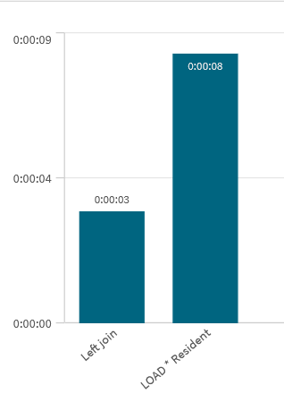

There's a common pattern for adding a calculated field to an existing table in Qlik.
You rename the table, reload everything from it, compute the new field, then drop the temporary
copy. It works, but when your table has a unique key you're doing a lot of unnecessary work.
A LEFT JOIN loading only the key and the calculated field is significantly faster.
The common pattern
The classic approach renames the original table, does a full LOAD * to recreate it
with the new field appended, then cleans up the temp table:
RENAME TABLE Transactions TO TMP;
Transactions:
LOAD
*,
Expression1 - Expression2 AS margin
RESIDENT TMP
;
DROP TABLE TMP;This is straightforward and works in every situation — with or without a unique key. But it reads every field of every row, writes them all to a new table, and only then drops the original. For a wide or long table, that's a lot of data movement just to add one column.
The LEFT JOIN alternative
If your table has a unique key, you can join only the key and the new field back onto the existing table. Qlik matches on the shared key field and adds the new column in place — no renaming, no full reload, no copy of every existing field:
LEFT JOIN (Transactions)
LOAD
TransID,
Expression1 - Expression2 AS margin
RESIDENT Transactions
;
That's the entire operation. Qlik reads TransID and computes margin
for each row, then merges the result into the existing Transactions table by
matching on TransID. Every other field in the table is untouched.
TransID is unique. If the key has duplicates,
the LEFT JOIN will fan out and multiply rows. Always verify your key is distinct before
using this pattern.
The benchmark
To quantify the difference, I tested both approaches on a 10 million row table with a small number of fields (which actually makes the result more interesting — less data per row means the full-reload overhead is as low as it can be, yet the gap is still large). Each approach was run five times on Qlik Cloud and results are the average across all iterations.
The test script, stripped down:
// ── Approach A — RENAME + LOAD * RESIDENT ──────────────────
LET vTestStart = Timestamp(Now(), 'hh:mm:ss.fff');
Tmp_Sorted:
LOAD
*,
Expression1 - Expression2 AS margin
RESIDENT Transactions
;
DROP TABLE Tmp_Sorted;
CALL sLog('LOAD * Resident', '$(vTestStart)', Timestamp(Now(), 'hh:mm:ss.fff'));
// ── Approach B — LEFT JOIN ──────────────────────────────────
LET vTestStart = Timestamp(Now(), 'hh:mm:ss.fff');
LEFT JOIN (Transactions)
LOAD
TransID,
Expression1 - Expression2 AS margin
RESIDENT Transactions
;
DROP FIELD margin; // reset between iterations
CALL sLog('Left join', '$(vTestStart)', Timestamp(Now(), 'hh:mm:ss.fff'));DROP FIELD margin is only there to reset the table between iterations so each run
starts from the same state. In production you leave it in.
Results
| Approach | Average time (10M rows) |
|---|---|
| RENAME + LOAD * RESIDENT + DROP | 0:00:08 |
| LEFT JOIN (key + field only) | 0:00:03 |

LEFT JOIN finished in 3 seconds. The full reload took 8 seconds. That's a 2.7× difference — on a table that isn't even especially wide. On a table with many fields the full reload grows proportionally; the LEFT JOIN cost stays nearly the same because it only ever moves two columns.
Why it's faster
The RENAME + LOAD * approach reads every field of every row from the temp table and writes them all back to the new table. The more fields the table has, the more data moves through memory — even though only one of those fields is new.
The LEFT JOIN reads only two fields — the join key and the computed value — then merges them into the existing in-memory table structure. No existing fields are copied, no intermediate table is fully materialised with all columns. The wider your table, the bigger this advantage becomes.
When to use each
- Use LEFT JOIN when your table has a unique key and you're adding one or a few calculated fields. Faster, less memory pressure, and the code is shorter too.
- Use RENAME + LOAD * when you don't have a reliable unique key, when you need to filter or transform existing fields at the same time, or when you're adding fields that depend on values from multiple other fields in complex ways.
The RENAME pattern isn't wrong — it's the right tool when you genuinely need to rebuild the whole table. But reaching for it by habit when all you need is one new column, on a table that has a unique key, is leaving a straightforward win on the table.